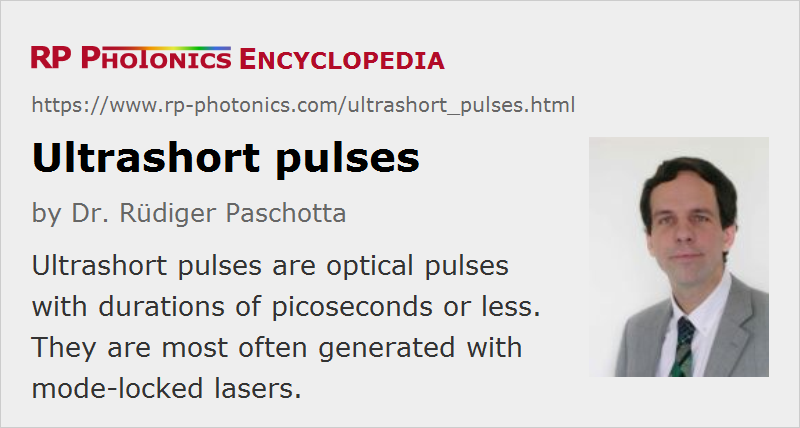

Ultrashort Pulses
Definition: optical pulses with durations of picoseconds or less
More general term: light pulses
German: ultrakurze Pulse
How to cite the article; suggest additional literature
Author: Dr. Rüdiger Paschotta
Light pulses as generated in mode-locked lasers can be extremely short, particularly for passive mode locking. There is no commonly accepted definition of “ultrashort”, but usually this label applies to pulses if their pulse duration is at most a few tens of picoseconds, and often in the range of femtoseconds.
Note that ultrashort pulses should not be called “ultrafast” – they are not faster (do not have a higher velocity) than longer pulses. They do, however, make it possible to investigate ultrafast processes (→ ultrafast optics), and can be used for fast optical data transmission. In the latter case, “fast” means a high data rate, not actually a high velocity.
Generation of Ultrashort Pulses
Ultrashort pulses are usually generated with passively mode-locked lasers, but sometimes also with optical parametric amplifiers (possibly using a supercontinuum as input) or with free electron lasers. It is also possible to start with longer pulses and apply some method of pulse compression. The article on ultrafast lasers lists some important areas of ultrashort pulse generation, including the generation of few-cycle pulses, where the pulse duration is only a small multiple of an optical cycle (few-cycle pulses).
Optical Bandwidth
Intrinsically, ultrashort pulses have a broad optical bandwidth. Even if they are instantaneous frequency is nearly constant throughout the pulse duration, the optical spectrum has a width which is at least of the order of the inverse pulse duration. This is essentially because e.g. for resonantly exciting some medium, a change of optical frequency matters only if it is large enough to cause a significant phase change within the pulse duration [1].
In many cases, the instantaneous frequency of a pulse is approximately constant, and the time–bandwidth product is somewhat below unity. For example, an unchirped Gaussian pulse with a 1 ps pulse duration (full width at half maximum) has an optical bandwidth of ≈0.44 THz. Extremely short pulses (few-cycle pulses) can have octave-spanning optical spectra.
Spatial Properties and Propagation
Concerning their spatial properties, ultrashort pulses are usually generated in the form of laser beams. Essentially, they can be focused to very small spots just as it is possible with stationary beams. However, various limitations come into play particularly in the regime of few-cycle pulses. For example, the broad optical bandwidth of such pulses leads to problems with the chromatic dispersion of lens materials, which leads to chromatic aberrations of the focusing optics unless special correction techniques are employed. This can lead to complicated spatio-temporal effects, which may make the focused pulse to have a larger duration than the pulse before focusing. Possible measures against such distortions include the use of reflective or diffractive (instead of refractive) optics as well as the careful compensation of various types of aberrations, e.g. using suitable lens combinations.
The propagation of ultrashort pulses in media gives rise to a range of interesting phenomena, particularly when optical nonlinearities are involved. This can be investigated with, e.g., pulse propagation modeling. Relevant physical effects can be chromatic dispersion, the Kerr effect, Raman scattering, and gain saturation, to name just some important examples.
Shaping Ultrashort Pulses
When ultrashort pulses are generated in a mode-locked laser, instead laser they can be subject to various pulse shaping phenomena. For example, there is often a saturable absorber which causes high losses to the beginning and sometimes also the end of the pulse.
Outside the laser, ultrashort pulses can further be manipulated with various kinds of pulse shapers.
Characterization of Ultrashort Pulses
There are various methods for pulse characterization. While some only allow the measurement of fundamental pulse parameters such as the pulse duration, others can be used for “complete” characterization in the sense that the whole time-dependent electric field and the spectral phase can be obtained. The results can be visualized in various ways, e.g. with graphs of time- or frequency-dependent functions, or with spectrograms.
Most frequently, one measures pulse durations using autocorrelators.
Questions and Comments from Users
Here you can submit questions and comments. As far as they get accepted by the author, they will appear above this paragraph together with the author’s answer. The author will decide on acceptance based on certain criteria. Essentially, the issue must be of sufficiently broad interest.
Please do not enter personal data here; we would otherwise delete it soon. (See also our privacy declaration.) If you wish to receive personal feedback or consultancy from the author, please contact him e.g. via e-mail.
By submitting the information, you give your consent to the potential publication of your inputs on our website according to our rules. (If you later retract your consent, we will delete those inputs.) As your inputs are first reviewed by the author, they may be published with some delay.
Bibliography
| [1] | Spotlight article of 2007-10-11: "Understanding Fourier Spectra" |
See also: pulses, pulse propagation modeling, pulse characterization, pulse duration, parabolic pulses, pulse shapers, mode locking, mode-locked lasers, ultrafast lasers, femtosecond lasers, ultrafast laser physics, RP Software News 2016-07-22
and other articles in the category light pulses
|  |
If you like this page, please share the link with your friends and colleagues, e.g. via social media:
These sharing buttons are implemented in a privacy-friendly way!